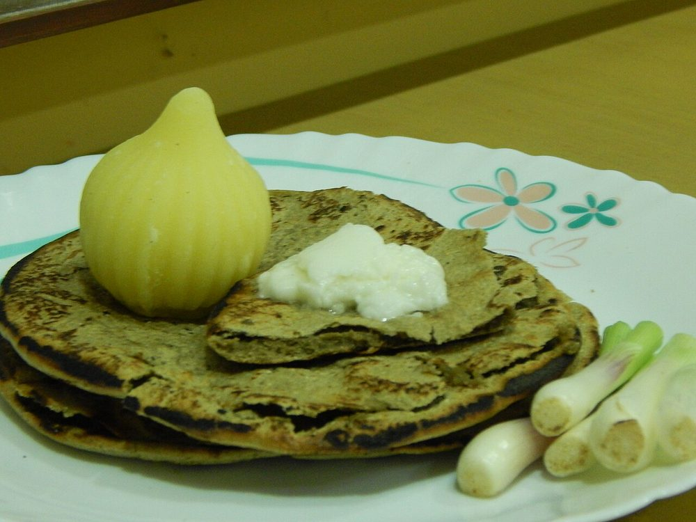

Bajra no Rotlo
thick hand-patted pearl-millet flatbread, nutty and dense, eaten hot under melting butter

Contains: milk
Ingredients
Quantities for 4.
- 300g Bajra Flourfreshly milled if you can get it; bajra flour goes bitter with age
- about 250ml, hot Water
- 1/2 tsp Salt
- 4 tsp, to serve Butteroptional
- 4 tsp, to serve Jaggerythe classic pairing. Rotlo, gud and butteroptional
Cookware
tawa, stovetop
Checked against the ingredient list for ten allergens: milk, egg, fish, crustaceans, tree nuts, peanuts, sesame, mustard, soy and gluten. Brands vary, so read the label on anything new to you.
Before you start
- Bajra has no gluten, so the dough is held together by heat and water alone. Use water as hot as your hands can bear and knead while it is warm.
- Mix only as much dough as you will cook in the next twenty minutes. Bajra dough cracks and dries fast, and cold dough will not pat out at all.
- Have the tawa heating before you shape the first rotlo. A patted rotlo cannot be moved twice.
Method
- Warm the flour in a bowl with the salt, then add the hot water in stages, mixing with a spoon at first, then your hand.
- Knead 3-4 minutes into a smooth, warm, slightly tacky dough. It should hold a ball without cracking at the edges.If the edges crack, it is too dry. Wet your palm and knead again rather than pouring more water in.
- Heat a heavy tawa over medium heat until a drop of water skitters across it.
- Take a lemon-sized ball, wet your palms, and pat it flat on a clean board or a sheet of plastic, rotating a quarter turn between pats, into a disc about 12cm across and 8mm thick.Pat with the flat of the fingers in one direction and rotate. Slapping it randomly makes it tear.
- Lift it on your palm and lay it flat on the hot tawa in one movement.
- Cook 90 seconds until the underside is speckled, then flip and cook the second side 2 minutes, pressing the edges with a cloth so it puffs.
- Lift the rotlo with tongs and hold it 20-30 seconds directly over the flame, first side down, until it balloons.It puffs only if both sides are properly cooked first. A rotlo that stays flat is still good. Do not chase it over the flame until it burns.
- Repeat with the rest, stacking them under a cloth.
- Serve hot with a knob of butter pressed into the centre and a lump of jaggery, or alongside ringan no olo.
Storage
Rotla are only good hot. Eat within an hour; leftovers can be crumbled the next morning into hot milk with jaggery, which is how Kathiawadi households use them up.
Nutrition Good estimate
Low protein: 8 g a serving, 10% of the calories
| Per serving147 g | Per 100 g | |
|---|---|---|
| Calories | 339 kcal | 230 kcal |
| Protein | 8.1 g | 6 g |
| Carbohydrate | 60.5 g | 41 g |
| of which sugars | 5.4 g | 4 g |
| Fibre | 2.6 g | 2 g |
| Fat | 7.2 g | 5 g |
| of which saturated | 3.0 g | 2 g |
| of which unsaturated | 3.8 g | 3 g |
Nearest database match used for bajra flour, jaggery. Estimated from raw ingredients using USDA FoodData Central.
More like this: Vegetarian Indian recipes · Gluten-free Indian recipes · No onion no garlic recipes · Gujarati recipes
Times, yields, allergens and nutrition are guidance. Use your own judgement on doneness and on storing. More in About.